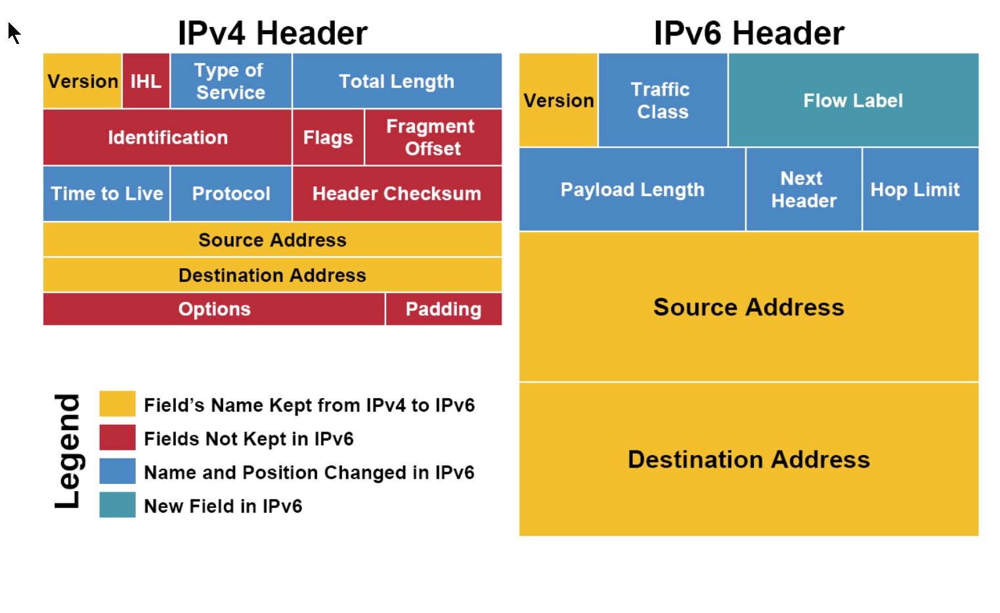
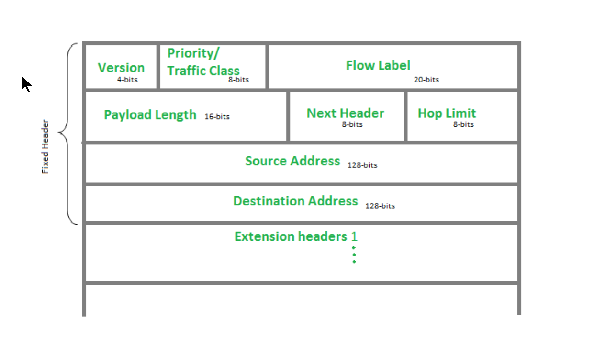

IPv4与IPv6头部的对比

IPv6最后可能有extension headers,而且这个extension headers并不被算作ipv6的头部，也就是ipv4的头部是变长的，而ipv6头部是固定长度的

黄色区域 (同名区域) 我们看到，三个黄色区域跨越了IPv4和IPv6。
- Version(4位)用来表明IP协议版本，是IPv4还是IPv6(IPv4, Version=0100; IPv6, Version=0110)。
- Source Adrresss和Destination Address分别为发出地和目的地的IP地址。
蓝色区域 （名字发生变动的区域）
Time to Live 存活时间(Hop Limit in IPv6)。Time to Live最初是表示一个IP包的最大存活时间：如果IP包在传输过程中超过Time to Live，那么IP包就作废。后来，IPv4的这个区域记录一个整数(比如30)，表示在IP包接力过程中最多经过30个路由接力，如果超过30个路由接力，那么这个IP包就作废。IP包每经过一个路由器，路由器就给Time to Live减一。当一个路由器发现Time to Live为0时，就不再发送该IP包。IPv6中的Hop Limit区域记录的也是最大路由接力数，与IPv4的功能相同。Time to Live/Hop Limit避免了IP包在互联网中无限接力。
Type of Service 服务类型(Traffic Class in IPv6)。Type of Service最初是用来给IP包分优先级，比如语音通话需要实时性，所以它的IP包应该比Web服务的IP包有更高的优先级。然而，这个最初不错的想法没有被微软采纳。在Windows下生成的IP包都是相同的最高优先级，所以在当时造成Linux和Windows混合网络中，Linux的IP传输会慢于Windows (仅仅是因为Linux更加守规矩！)。后来，Type of Service被实际分为两部分：Differentiated Service Field (DS, 前6位)和Explicit Congestion Notification (ECN, 后2位)，前者依然用来区分服务类型，而后者用于表明IP包途径路由的交通状况。IPv6的Traffic Class也被如此分成两部分。 通过IP包提供不同服务的想法，并针对服务进行不同的优化的想法已经产生很久了，但具体做法并没有形成公认的协议。比如ECN区域，它用来表示IP包经过路径的交通状况。如果接收者收到的ECN区域显示路径上很拥挤，那么接收者应该作出调整。但在实际上，许多接收者都会忽视ECN所包含的信息。交通状况的控制往往由更高层的比如TCP协议实现。
Protocol 协议(Next Header in IPv6)。 IPv4的Protocal就是用来说明高层协议是什么，但IPv6的Next Header的作用不止如此。 IPv6的Next Header是和最后的Extension Header一起作用的。如果IPv6没有Extension header, 则Next Header就是上层协议(TCP,UDP)。如果有设置Extension Header,则Next Header用来说明下一个Extension Header是什么。 每个Extension Header 也有Next Header字段，用来表示下一个Extension Header是什么。 最后一个Extension Header的Next Header才是说明上层协议(TCP,UDP)
- Total Length, 以及IPv6中Payload Length的讨论要和IHL区域放在一起，我们即将讨论。
红色区域 (IPv6中删除的区域)
我们看一下IPv4和IPv6的长度信息。 IPv4在头部的最后，是options。每个options有32位，是选填性质的区域。一个IPv4头部可以完全没有options区域。不考虑options的话，整个IPv4头部有20 bytes(上面每行为4 bytes)。但由于有options的存在，整个头部的总长度是变动的。我们用IHL(Internet Header Length)来记录头部的总长度，用Total Length记录整个IPv4包的长度。 IPv6没有options，它的头部是固定的长度40 bytes(Extension header不算做 header)，所以IPv6中并不需要IHL区域。Payload Length用来表示IPv6的数据部分的长度(其中包括Extension Headers)。整个IPv6包为40 bytes + Payload Length。
IPv4中还有一个Header Checksum区域。这个checksum用于校验IP包的头部信息。IPv6则没有checksum区域。IPv6包的校验依赖高层的协议和底层的协议来完成，这样的好处是免去了执行checksum校验所需要的时间，减小了网络延迟 (latency)。
Identification, flags和fragment offset，这三个区域都是为碎片化(fragmentation)服务的。碎片化是指一个路由器将接收到的IP包分拆成多个IP包传送，而接收这些“碎片”的主机需要将“碎片”重新组合(reassembly)成一个IP包。 之所以IPv4需要支持碎片，是因为不同的局域网所支持的最大传输单元(MTU, Maximum Transportation Unit)不同(以太网的默认MTU是1500，但是这个值是可以被设置的)。如果一个IPv4包的大小超过了局域网支持的MTU，就需要在进入该局域网时碎片化传输。 碎片化会给路由器带来很大的负担。 IPv6协议的头部没有用于碎片化的字段，也就是路由器在收到IPv6的package时，如果这个包大于MTU, 路由器是不会将其碎片化的，而是直接drop并返回相应的ICMP消息,其中包含应该调整的MTU大小，发送端做相应调整。这个机制叫做Path MTU Discovery，这个IPv6自动实现的。也就是说，IPv6 package在传输中是不会被碎片化，这减少了路由器的负担，增加了传输的效率 而其实IPv4也可以被设置应用类似Path MTU Discovery的机制，避免碎片化
绿色区域 (IPv6新增区域) Flow Label是IPv6中新增的区域。它被用来提醒路由器重复使用之前的路径传输IP包。这样IP包可以自动保持出发时的顺序。这对于流媒体之类的应用有帮助。
Best Effort
IP协议在产生时是一个松散的网络，这个网络由各个大学的局域网相互连接成的，由一群碰头垢面的Geek维护。所以，IP协议认为自己所处的环境是不可靠的：诸如路由器坏掉、实验室失火、某个PhD踢掉电缆之类的事情随时会发生。
这样的凶险环境下，IP协议提供的传送只能是“我尽力” (best effort)式的。所谓的“我尽力”，其潜台词是，如果事情出错不要怪我，我只是答应了尽力，可没保证什么。所以，如果IP包传输过程中出现错误(比如checksum对不上，比如交通太繁忙，超过Time to Live被drop,比如网络连接突然断掉)，根据IP协议，你的IP包会直接被丢掉。Game Over, 不会再有进一步的努力来修正错误。Best effort让IP协议保持很简单的形态。更多的质量控制交给高层协议处理，IP协议只负责有效率的传输。(TCP和IP协议是同时被设计出来的，UDP协议才是后来补充的)
“效率优先”也体现在IP包的顺序(order)上。即使出发地和目的地保持不变，IP协议也不保证IP包到达的先后顺序。我们已经知道，IP包的路由是根据routing table决定路线的。如果在连续的IP包发送过程中，routing table更新(比如有一条新建的捷径出现)，那么后发出的IP包选择走不一样的接力路线。如果新的路径传输速度更快，那么后发出的IP包有可能先到。
IPv6中的Flow Label可以建议路由器将一些IP包保持一样的路由路径。但这只是“建议”，路由器可能会忽略该建议。
总述
每个网络协议的形成都有其历史原因。比如IP协议是为了将各个分散的实验室网络连接起来。由于当时的网络很小，所以IPv4(IPv4产生于70年代)的地址总量为40亿。尽管当时被认为是很大的数字，但数字浪潮很快带来了地址耗尽危机。IPv6的主要目的是增加IPv4的地址容量，但同时根据IPv4的经验和新时代的技术进步进行改进，比如避免在传输过程中被碎片化，比如取消checksum。 IP协议是"Best Effort"式的，IP传输是不可靠的。但这样的设计成就了IP协议的效率。
PS1
为什么IPv6的头部要取消checksum字段？
IPv4的头部有checksum字段，路由器在收到每一个IPv4包时，在处理之前都需要先校验checksum, 而路由器在处理IPv4包时，需要改动比如TTL字段，然后重新计算checksum。也就是路由器需要先检查再重新计算，这个overload IPv6的设计者认为没有必要，因为在link layer 和 transport layer都有了校验机制，我这里就省去吧。这提高了网络传输的效率。毕竟，网络层协议的设计就是要"best effort"
PS2
IPv6的Path MTU Discovery到底是如何避免碎片化的？ IPv4的包在传输的过程中，如果路由器要送往的下一个网络的MTU小于当前的ip package大小，则当前的package要被分割为多个小的package，每个package都有自己的头部，碎片化的信息在ipv4的Identification, flags和fragment offset三个字段中存储， 这一过程就叫碎片化。 而在ipv6的协议中，路由器是不需要执行碎片化的，sending host 保证packets fit within the path MTU. This is done using a process called Path MTU Discovery.其过程如下：
- The source host initially assumes the path MTU is the MTU of its first-hop link.
- The source host sends packets of the first-hop link's MTU size.
- If a router along the path has a next-hop link with a smaller MTU, the router drops the packet and sends back an ICMPv6 "Packet Too Big" message to the source host. This message includes the MTU of the next-hop link.
- Upon receiving the "Packet Too Big" message, the source host reduces its assumed path MTU to the MTU reported in the message.
- The source host continues to send packets, now using the smaller MTU size. If these packets encounter a link with an even smaller MTU, the process repeats.
- The source host continues this process until its packets reach the destination without being dropped for being too big.
This Path MTU Discovery is an integral part of the IPv6 protocol. It is a mechanism that allows a source node to discover the path MTU, which is the largest packet size that can be transmitted without fragmentation, over the path to a destination node.
IPv4 also supports Path MTU Discovery, much like IPv6, albeit with a few differences.Here's how it works in IPv4:
- The source host initially assumes the path MTU is the MTU of its first-hop link.
- The source host sets the "Don't Fragment" (DF) flag in the IP header of the outgoing packets. This instructs routers along the path not to fragment the packet.
- If a packet arrives at a router that needs to forward the packet onto a link with a smaller MTU, and the packet's DF flag is set, the router cannot fragment the packet. Instead, the router drops the packet and sends back an ICMP "Fragmentation Needed and DF Set" (Type 3, Code 4) message to the source host. This message includes the MTU of the next-hop link.
- Upon receiving the ICMP message, the source host reduces its assumed path MTU to the MTU reported in the message.
- The source host continues this process until its packets reach the destination without being dropped for being too big.
需要注意的是，这一过程依赖于ICMP消息的传送。If ICMP messages are blocked by a firewall or other network device, the source host won't receive these messages when it sends a packet that's too large to be forwarded by a router along the path.As a result, the source host won't know that it needs to reduce the size of its packets, and it will continue to send packets that are too large. These packets will be dropped, and since the source host isn't receiving any indication of this, it will appear as if the packets are being lost in transit. This can lead to a situation known as a "black hole" connection, where communication is impossible even though the network path between the source and destination is valid.
PS3
ipv4/ipv6的头部length字段都是16位，也就是一个ip package可以最大是65525个字节，而mtu要远远小于这个值，通常为1500. 所以从网络层到连接层，一个大的ip package是要被分成多个小的ip package放到一个帧中传送的，ipv4的头部有Identification, flags和fragment字段支持，但ipv6是怎么处理的？
ipv6是通过最后的Extension Headers处理的，extension header有很多种，其中的frag extension header 就是存储碎片信息的。
关于碎片信息的处理，我们用UDP数据报测试（TCP 协议在握手期间会协商MSS,max segment size,这个值通常会小于MTU。也就是一个TCP segment是要小于MTU的。而UDP没有这样的过程。UDP datagram封装到ip层，如果一个数据包过大，就要被分成多个ip package）
首先测试IPv4协议，其头部有碎片化的字段，我们的测试网络的MTU是1500，也即是ip package最大为1500大小。超过这个大小就要分多个ip package 发送，1500-20-8 = 1472，如果UDP的payload大于1472，就需要分包。
我们首先发送1472个byte，tcpdump结果如下
07:47:27.611341 IP (tos 0x0, ttl 64, id 54684, offset 0, flags [DF], proto UDP (17), length 1500)
172.17.0.2.55128 > 3fe6398f0505.12345: UDP, length 1472
07:47:27.611341: This is the timestamp of when the packet was captured. It is in the format hours:minutes:seconds.microseconds.
IP: This indicates that the packet uses the Internet Protocol (IP).
tos 0x0: Type of Service (now known as Differentiated Services Code Point - DSCP), it's a field in the IP header for specifying the quality of service. 0x0 means it's the default.
ttl 64: Time to Live. This value decrements by 1 each time the packet passes through a router. If it reaches 0, the packet is dropped. 64 is the initial value.
id 54684: Identification. This is an unique identifier for each IP packet. It is used during reassembly of fragmented packets.
offset 0: This is the fragment offset, used for reassembling fragmented packets. 0 means this packet is not a fragment, or if it is, it's the first fragment.
flags [DF]: IP flags. [DF] means "Don't Fragment". This packet will not be fragmented, regardless of its size.
proto UDP (17): The protocol used. UDP is the User Datagram Protocol, and 17 is its assigned number in the IP header.
length 1500: The total length of the IP packet, including headers, in bytes.
172.17.0.2.55128 > 3fe6398f0505.12345: The source and destination of the packet.
UDP, length 1472: This indicates that the packet is a UDP packet. The length 1472 is the length of the UDP data. This does not include the IP or UDP headers.
如果我们发送1473个byte,则ip被分包了
08:06:45.903185 IP (tos 0x0, ttl 64, id 9742, offset 0, flags [+], proto UDP (17), length 1500)
172.17.0.2.38221 > 3fe6398f0505.12345: UDP, length 1473
08:06:45.903196 IP (tos 0x0, ttl 64, id 9742, offset 1480, flags [none], proto UDP (17), length 21)
172.17.0.2 > 3fe6398f0505: udp
整个UDP的大小是1473+8=1481个byte,也就是ip包的数据部分大小。
第一个ip包数据部分为1480个byte，所以第二个ip包的offset为1480.flags [+]意味着后续还有碎片
如果我们发送1480+1480+1-8=2953个byte,那么应该分为3个ip包，如下
08:18:23.031720 IP (tos 0x0, ttl 64, id 41247, offset 0, flags [+], proto UDP (17), length 1500)
172.17.0.2.36228 > 3fe6398f0505.12345: UDP, length 2953
08:18:23.031729 IP (tos 0x0, ttl 64, id 41247, offset 1480, flags [+], proto UDP (17), length 1500)
172.17.0.2 > 3fe6398f0505: udp
08:18:23.031729 IP (tos 0x0, ttl 64, id 41247, offset 2960, flags [none], proto UDP (17), length 21)
172.17.0.2 > 3fe6398f0505: udp
再看IPv6是如何处理的 我们首先发送100字节，这个远远小于mtu,只有一个ipv6包即可
10:07:29.452113 IP6 (flowlabel 0x062fc, hlim 64, next-header UDP (17) payload length: 108) 2001:db8:1::242:ac11:2.42620 > 0e5077fa42f2.12345: [bad udp cksum 0xb89d -> 0xb181!] UDP, length 100
next-header为UDP,我们没看到有extension header （bad udp cksum 0xb89d -> 0xb181!竟然udp checksum错误）
然后我们发送1500-40-8 =1452 bytes，1460是ipv6在不需要分片的情况下能一次性发送的最长信息了
10:12:07.472629 IP6 (flowlabel 0x03246, hlim 64, next-header UDP (17) payload length: 1460) 2001:db8:1::242:ac11:2.41773 > 0e5077fa42f2.12345: [bad udp cksum 0xbde5 -> 0x59f0!] UDP, length 1452
我们发送1453bytes
10:12:59.784963 IP6 (flowlabel 0x327be, hlim 64, next-header Fragment (44) payload length: 1456) 2001:db8:1::242:ac11:2 > 0e5077fa42f2: frag (0x2586f7b3:0|1448) 49638 > 12345: UDP, length 1453
10:12:59.784970 IP6 (flowlabel 0x327be, hlim 64, next-header Fragment (44) payload length: 21) 2001:db8:1::242:ac11:2 > 0e5077fa42f2: frag (0x2586f7b3:1448|13)
被分成了2个ip包，这两个ip包的next-header的数据变成了44，这个44代表Fragment header,这个Fragment header被存储到了Extension Header中，(0x2586f7b3:1448|13)
我们注意到payload length 第一个为1456，而其中udp部分的长度为1448，第二个payload length 位21，而udp部分的长度位13，由此我们知道这个Fragment header的长度为8个字节。
我们每个字段都解释以下：
10:12:59.784963 and 10:12:59.784970: 这是数据包被抓到的时间戳
IP6: This indicates that the packet is using the IPv6 protocol.
flowlabel 0x327be: The flow label is a part of the IPv6 header that can be used by a source to label sequences of packets for which it requests special handling by the IPv6 routers.
hlim 64: This is the hop limit, equivalent to TTL in IPv4. It specifies the maximum number of hops that the packet can take before it is discarded.
next-header Fragment (44): This indicates the type of extension header immediately following the IPv6 header. In this case, it's a fragment header.
payload length: 1456 and payload length: 21: This is the length of the payload in bytes, not including the IPv6 header.
2001:db8:1::242:ac11:2 > 0e5077fa42f2: This is the source and destination addresses. The source is an IPv6 address and the destination seems to be a MAC address.
frag (0x2586f7b3:0|1448) and frag (0x2586f7b3:1448|13): These are the fragment headers. The numbers are identification, fragment offset, fragment size.
49638 > 12345: These are the source and destination ports.
UDP: This indicates that the packet is using the UDP protocol.
length 1453: This is the length of UDP data
以上的这些ip包的分片，都是由于ip包大于MTU，在发送前就被sending host分片了。 我们之前所说的，IPv6不支持分片，指的是IPv6的包在路由过程中，路由器是不会执行分片操作的。
如果我们的协议没有走到link layer，比如我们在lo网卡上测试，lo网卡是本地回路网卡，直接将数据发给自己，协议栈只处理到网络层，就将数据原路返回了，也就是没有走到连接层，那么我们的ip package就可以支持最大length。
测试如下，我们首先发送1473个byte,1473+8+20=1501，大于MTU,但只有一个ipv4包
13:23:43.377033 IP (tos 0x0, ttl 64, id 37771, offset 0, flags [DF], proto UDP (17), length 1501)
localhost.60208 > localhost.12345: UDP, length 1473
ipv4最大的length是65535，65535-20-8=65507，这也是我们通过socket接口发送udp数据的最大值，再大于这个值接口就报错了
13:24:55.820781 IP (tos 0x0, ttl 64, id 44318, offset 0, flags [DF], proto UDP (17), length 65535)
localhost.54611 > localhost.12345: UDP, length 65507
ipv6的最大length也是65525，我们发送65535-40-8=65487个byte
13:38:14.622802 IP6 (flowlabel 0x9fd12, hlim 64, next-header UDP (17) payload length: 65495) ip6-localhost.50677 > ip6-localhost.12345: [bad udp cksum 0xffea -> 0x87cc!] UDP, length 65487
PS4
Extension Headers
The "Next Header" field in IPv6 can represent a variety of protocols and extension headers, not just transport layer protocols like TCP or UDP. Here are some of the possible values:
0: Hop-by-Hop Options
4: IPv4
6: TCP
17: UDP
41: IPv6
43: Routing Header
44: Fragment Header
50: Encapsulating Security Payload
51: Authentication Header
58: ICMPv6
59: No Next Header
60: Destination Options
103: PIM (Protocol Independent Multicast)
Each of these values represents a different type of header that can follow the current header in an IPv6 packet. For example, a value of 44 in the "Next Header" field would indicate that a Fragment Header follows.
The length of each extension header in IPv6 can vary, and it's not the same for all of them. Each extension header contains a "Header Extension Length" field which indicates the size of that specific extension header.